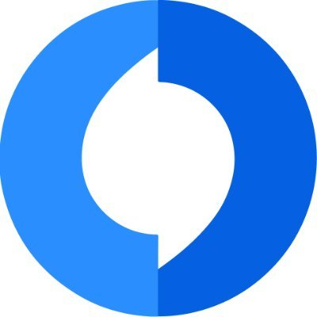
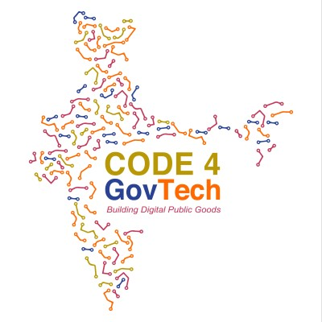

Carnegie Mellon University
M.S. in Computational Data Science
Coursework includes Search Engines, Large Language Models Applications, Cloud Computing, and Machine Learning Systems.
CMU · Carnegie Mellon University · M.S. Computational Data Science
I work on machine learning systems for LLM inference, compiler-backed kernels, information retrieval, and distributed ML infrastructure at CMU.
About
I am Sai Gopal Reddy Kovvuri, a Master's student in Computational Data Science at Carnegie Mellon University (CMU), and a Research Assistant with the CX Group and a Research Assistant with the Catalyst Group. My current work focuses on compiler and inference components across open-source ML systems, including Apache TVM, MLC-LLM, WebLLM, and FlashInfer-Bench.
Previously, I was a Product Engineer at Juspay, where I built production payment systems and RAG-based developer tooling. I completed my B.Tech in Computer Science at Shiv Nadar University with high distinction, and my research has appeared at BMVC and NCC.
Education
M.S. in Computational Data Science
Coursework includes Search Engines, Large Language Models Applications, Cloud Computing, and Machine Learning Systems.
B.Tech in Computer Science
Graduated with CGPA 9.12/10, high distinction, and four Dean's List honors.
Experience


Work
Cloud Computing, CMU
Architected a three-tier Go microservice with gRPC serving 1,000+ RPS, backed by Spark/Scala ETL, MySQL, and AWS infrastructure managed with Terraform, Helm, and Kubernetes.
Machine Learning Systems, CMU
Implemented 2D parallel training from scratch using MPI collectives and Megatron-style tensor parallel communication, with ZeRO Stage-3 parameter sharding.
Search Engines, CMU
Built an end-to-end neural search and RAG engine using BM25, dense retrieval, BERT reranking, SVMRank, and pseudo-relevance feedback.
Blockchain Application
Blockchain-based platform for NFT warranty cards, enabling issuance, transfer control, and warranty management.
View ProjectNLP Toolkit
A toolkit for seamless data generation and fine-tuning of NLP models, packed into a single convenient workflow.
View ProjectPublications
National Conference on Communications, 2025
Reddy, K.S.G., Prabhakar, M., and Mukherjee, S. Dual-stream CNN-LSTM approach for egocentric activity recognition.
IEEE XploreBritish Machine Vision Conference, 2024
Reddy, K.S.G., Bodduluri, S., Adityaja, A.M., Shigwan, S., Kumar, N., and Mukherjee, S. Graph-neural unsupervised image segmentation with ARMA filters.
BMVC ProceedingsSkills
Python, Go, C++
PyTorch, scikit-learn, Hugging Face, NumPy, Pandas, FAISS
AWS, Azure, GCP, Docker, Kubernetes, Terraform, Helm
MySQL, PostgreSQL, MongoDB, Redis, Git, Kibana
Contact